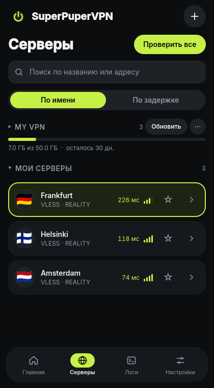
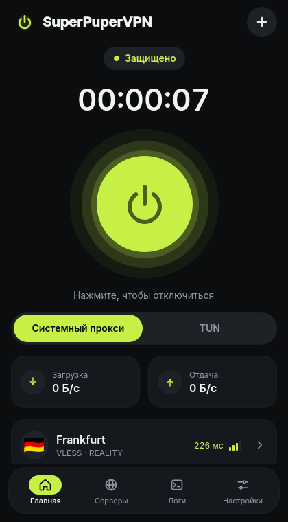

Одна кнопка.
Ваши серверы VLESS + REALITY.
Простой клиент для Windows и Linux, который за секунды превращает ссылку vless://
в работающее подключение. Вставили ссылку, нажали кнопку — готово.


Для тех, кому нужно, чтобы просто работало
Большинство VLESS-клиентов ждут, что вы знаете, что такое spx, sid и fp.
SuperPuperVPN — нет. Он сделан для своих серверов на 3x-ui, Marzban, Remnawave или чистом Xray и для друзей,
с которыми вы ими делитесь.
Вставил и подключился
Нажмите Ctrl+V: одна ссылка, несколько, base64 или подписка с трафиком и сроком действия.
Прокси или весь трафик
Системный прокси для браузеров или TUN для всех программ на компьютере, включая игры и терминал.
Без утечек
DNS тоже идёт через туннель, IPv6 не утекает, а системный прокси восстанавливается после сбоя.
Настоящий пинг и флаги
Задержка меряется через сам сервер. Флаги стран берутся из встроенной базы IP-адресов.
Честный статус
«Защищено» появляется, только когда запрос реально прошёл через ваш сервер, а не когда запустился процесс.
Без телеметрии
Ничего никуда не отправляется, кроме как через ваш сервер. Никогда. Код открыт — можно проверить.
Безопасность в основе
У окна, по которому вы кликаете, нет прав администратора. Привилегированную работу делает небольшая системная служба, и она проверяет каждый запрос.
- В режиме TUN нет открытых портов. На localhost нет ничего, через что другие программы могли бы выдать ваш IP.
- Служба проверяет, кто к ней обращается. polkit в Linux, закрытый именованный канал в Windows; сетевые клиенты отклоняются.
- Профили зашифрованы. AES-256-GCM, ключ хранится в хранилище ключей системы (libsecret или DPAPI).
- Строгая проверка. Ссылки с параметрами, которые ядро не поддерживает, отклоняются с понятным сообщением, а не подключаются наполовину.
Установка
Выберите систему. Установщик один раз настраивает фоновую службу, дальше приложение работает от вашего пользователя.
Windows 10 / 11
Скачайте .msi, запустите и откройте SuperPuperVPN из меню «Пуск».
Сборки пока без цифровой подписи: если SmartScreen предупредит, выберите Подробнее → Выполнить в любом случае.
Скачать .msiUbuntu, Debian, Mint
Ubuntu 22.04+, Debian 12+, Mint 21+. Скачайте .deb:
sudo apt install ./superpupervpn_*_amd64.debДругие дистрибутивы: сборка из исходников.
Портативный .zip для Windows — на странице релизов.
В каждом релизе есть SHA256SUMS.txt, чтобы проверить скачанный файл.
Три шага
Сначала разбираться в настройках не нужно.
Скопируйте ссылку
Ссылку
vless://или адрес подписки из вашей панели.Нажмите Ctrl+V
SuperPuperVPN покажет, что нашёл. Нажмите Добавить.
Нажмите большую кнопку
Выберите «Системный прокси» или TUN. Вы защищены.
Поддержать проект
SuperPuperVPN бесплатный, его делает один человек. Без встроенных серверов, рекламы и телеметрии: разработка держится на донатах. Донат — это поддержка клиента; серверы и подписки в него не входят.
USDT (TRC-20) · комиссия сети — несколько центов
TK8VdDvtU7Mq5b7X59SfpdURfpZR9etFmu
Или просто поставьте звезду и расскажите другу — это очень помогает.